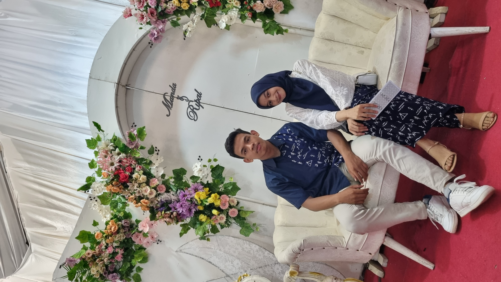
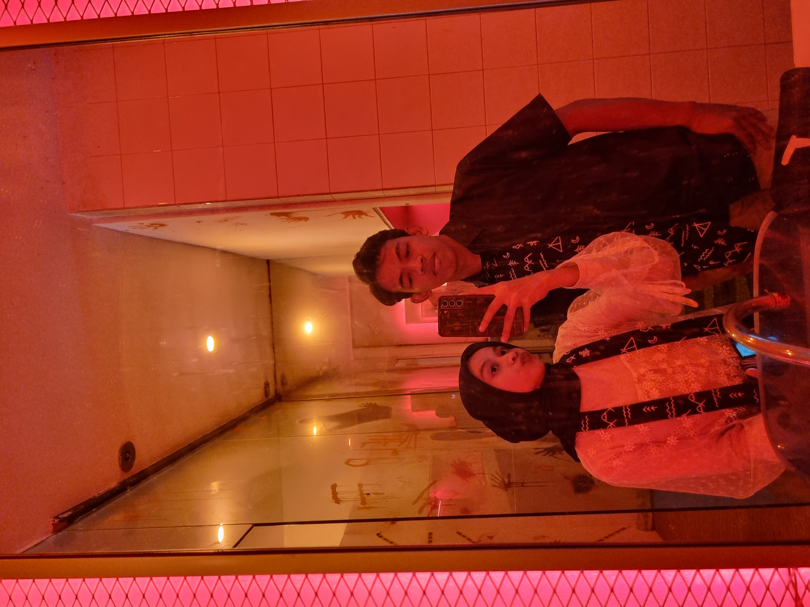
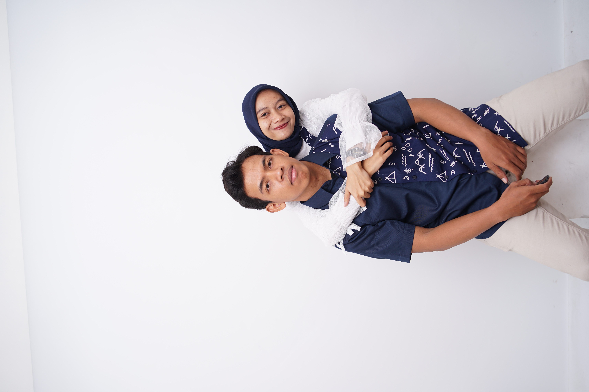
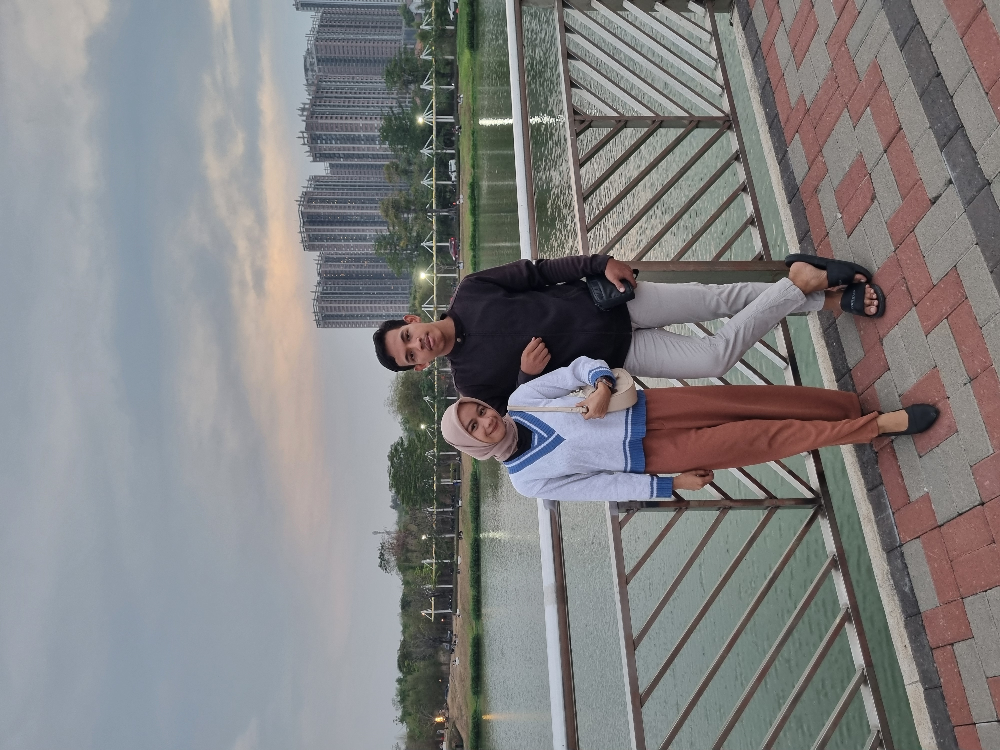
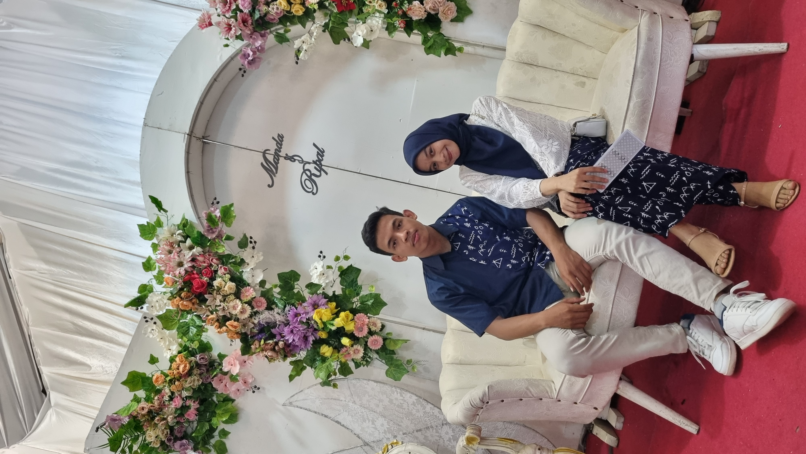
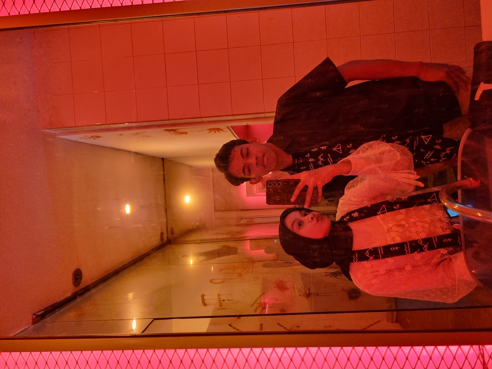
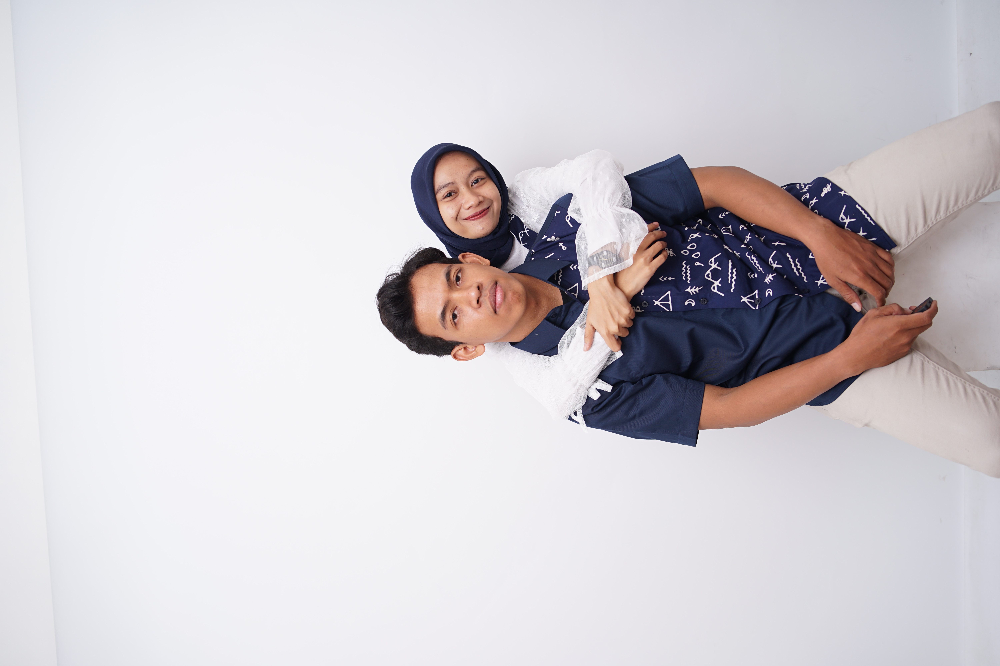
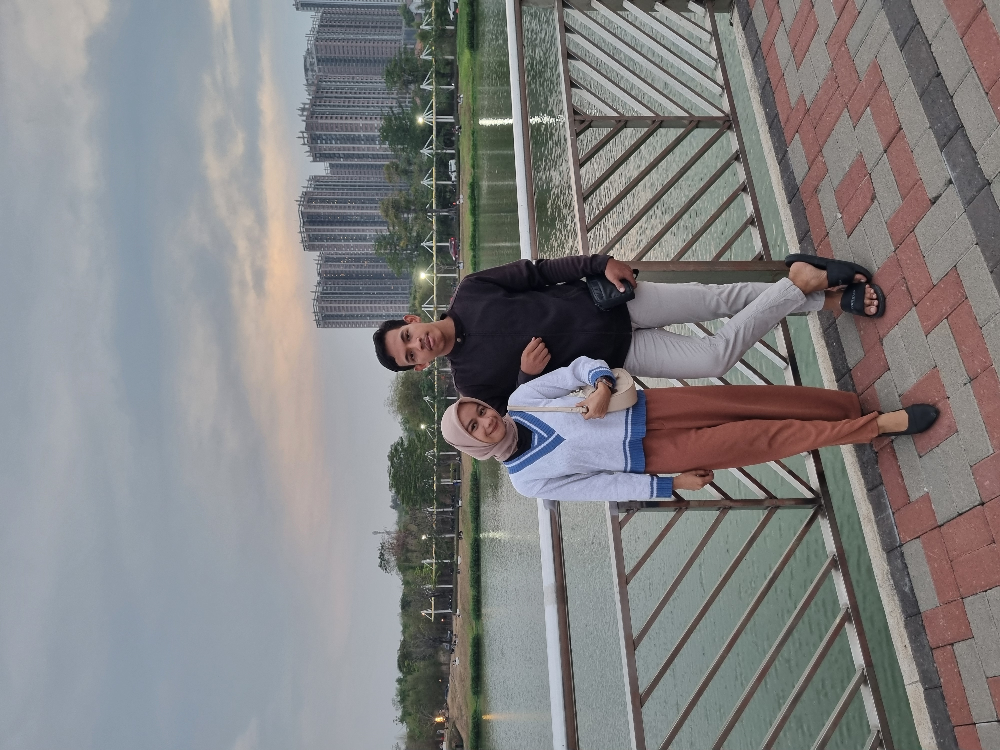
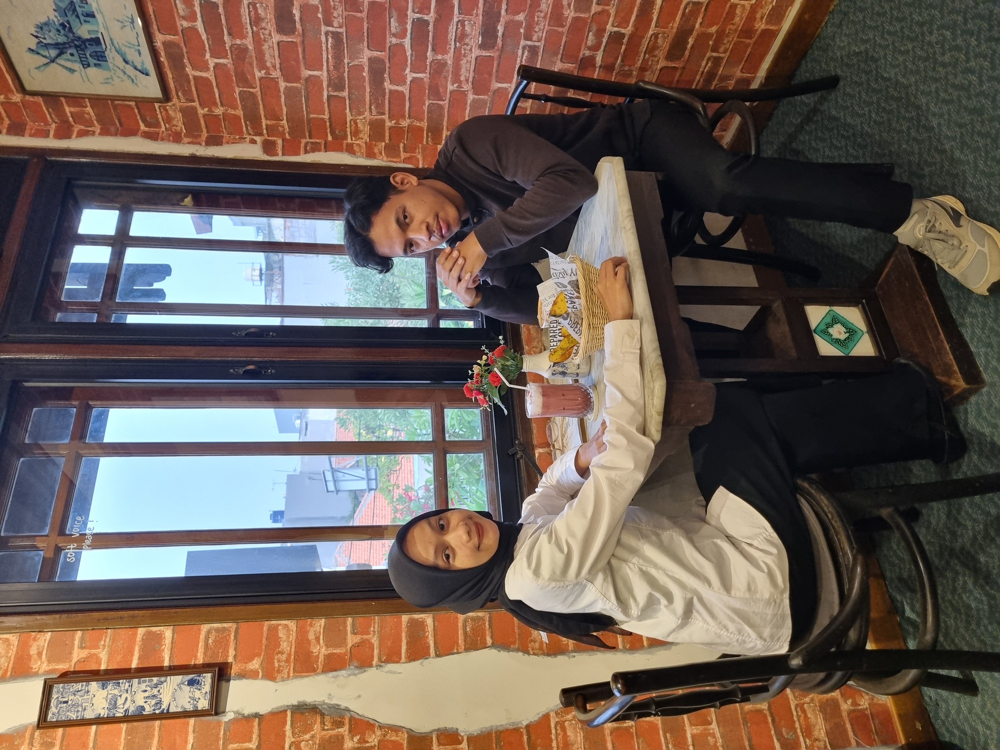
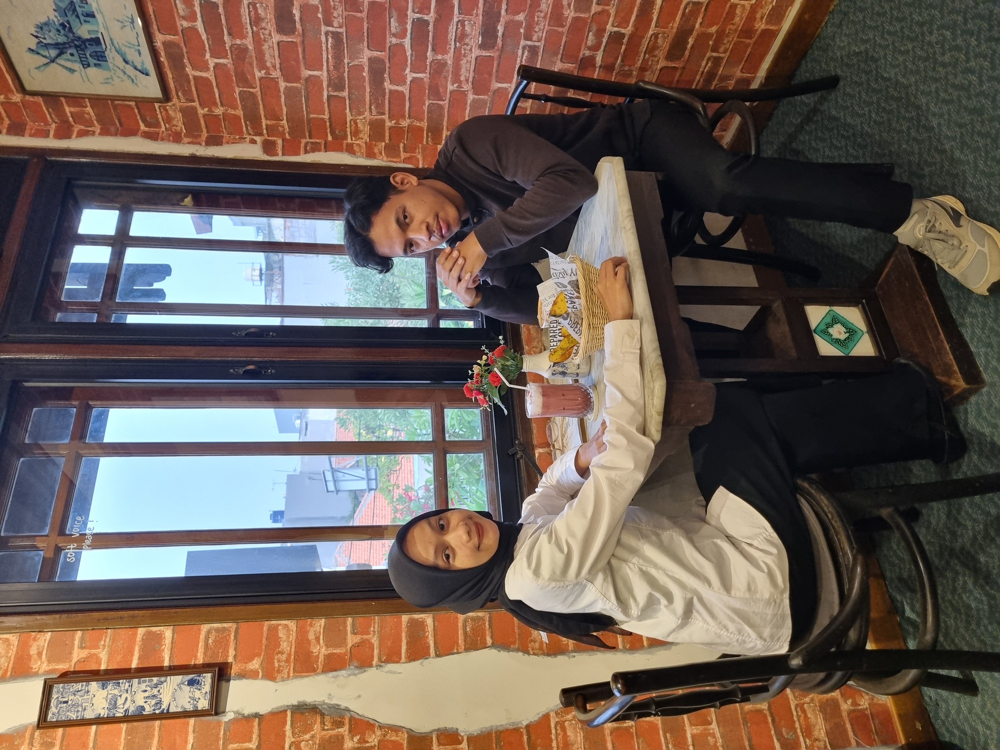

Our Journey
Aku masih ingat betul hari pertama kita bertemu, waktu itu di kampus. Pertemuan yang bisa dibilang gak sengaja tapi penuh arti dan kejutan. Kamu salah turun dari angkot, dan akhirnya harus jalan kaki cukup jauh. Teman kamu yang kenal aku langsung minta tolong aku buat jemput kamu. Kita pun akhirnya naik motor bonceng tiga. Dari situ, tanpa kita sadari, cerita kita pun mulai terbentuk.
Seiring berjalannya hari, obrolan kita makin intens dan gak ada arah tujuan, lalu perhatian-perhatian kecil mulai terasa, dan akhirnya kita mulai dekat. Ingat nggak, jalan-jalan pertama kita ke Ragunan? Waktu itu kita belum terlalu tahu satu sama lain, tapi rasanya nyaman banget. Lalu kita lanjut ke Taman Mini, terus ke Curug. Dan di hari kita ke Curug itu, ada momen yang nggak bakal pernah aku lupain. kamu ngajak aku ke rumah kamu untuk pertama kalinya. Aku senang tapi juga deg-degan. Tapi sebagai laki-laki yang gantle, aku percaya diri. Karena buatku, itu bukan sekadar ajakan biasa, tapi bentuk kepercayaan dari kamu.
Awalnya, hubungan kita masih malu-malu. Kita sepakat untuk keep it private, nggak mau banyak orang tahu, apalagi temen-temen kampus. Tapi waktu kita balik dari Kebun Raya Bogor, mulai berubah yang dimana tadinya keep it private hubungan kita mulai terbuka. Orang-orang mulai tahu, dan aku nggak pernah keberatan. Karena aku bersyukur sama kamu. Bangga bisa ada di samping kamu.
Hari-hari setelahnya, kita lewati bareng. Dari kita jalan-jalan, makan bareng, nemenin satu sama lain ke mana pun, bahkan sampai kondangan bareng. Ada hari-hari senang, tapi juga ada hari-hari penuh tantangan. Tapi semua itu terasa lebih ringan karena kamu ada. Karena kita ada buat satu sama lain.
Aku bersyukur banget bisa sejauh ini sama kamu. Bangga karena kita bukan cuman jadi pasangan, tapi juga jadi tim yang saling dukung, saling tumbuh, saling menguatkan. Kebersamaan kita bukan cuma tentang tawa, tapi juga tentang saling memahami di saat-saat sulit.
Ke depannya, aku harap kita bisa terus bareng-bareng. Saling menguatkan, saling menjaga, saling mendukung mimpi dan tujuan masing-masing. Aku pengen kita terus jadi rumah satu sama lain, sampai kapan pun. Karena kamu, adalah bagian terbaik dari hari-hariku. Bersamamu, aku merasa lengkap. Kamu bukan sekadar pasangan, kamu adalah sahabat terbaikku, pendengar setiaku, dan rumah tempat aku pulang. Hadirmu adalah anugerah yang tak pernah berhenti aku syukuri
Terima kasih sudah menjadi bagian dari hidupku. Terima kasih sudah bertahan, berjalan, dan tumbuh bersamaku. Semoga cinta ini terus tumbuh, dan kisah kita terus indah dari hari ke hari, hingga akhir hayat nanti.


 







 
